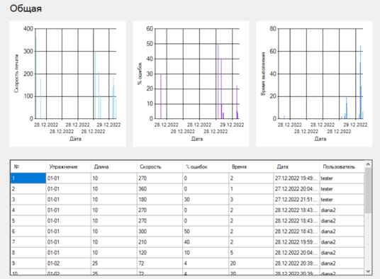
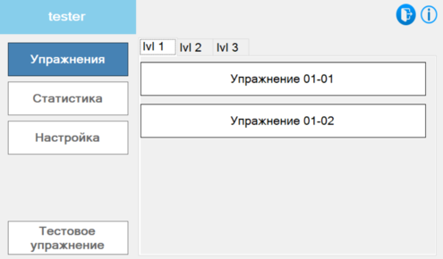

Автоматизированная система Клавиатурный тренажер создана для обучения слепому методу печати. С помощью данной системы администратор может создавать упражнения для тренировки навыков слепой печати, а пользователи (обучаемые) должны проходить данные упражнения и контролировать статистику выполнения.
Программа имеет клиент серверную-архитектуру и требует наличия подключения к сети Интернет.
Данная программная система имеет два режима работы: режим обучаемого и администратора. При запуске программной системы появляется окно авторизации, представленное на рисунке. В поля "Логин" и "Пароль" необходимо ввести данные зарегистрированного пользователя и нажать кнопку "Вход".
Если пользователь желает зарегистрироваться, ему необходимо нажать кнопку "Регистрация", чтобы открыть окно регистрации. В новом окне заполнить поля "Логин", "Пароль" и повторить пароль, затем нажать кнопку "Регистрация".
Если все поля заполнены верно, система определяет роль пользователя и открывает соответствующее окно, которое открывает доступ к определенным действиям в системе.
В состав режима администратора входят разделы: "Упражнения", "Статистика", "Создать упражнение", "Настройка сложности".
Для создания упражнения, администратору необходимо выбрать раздел "Создать упражнение" для открытия формы настройки упражнения.
Чтобы отредактировать или удалить упражнение, требуется предварительно выбрать существующее упражнение из списка на форме администратора и нажать соответственно кнопку "Изменить" или "Удалить".
Создание и редактирование упражнения проводятся в форме настройки упражнения, которая имеет следующий вид.
Для сохранения упражнения необходимо заполнить поля:
Если все поля были корректно заполнены, изменения сохранятся после нажатия кнопки "Сохранить".
Ввести текст упражнения можно вручную в поле текста упражнения, уровень сложности и длина текста упражнения контролируются автоматически.
Чтобы заполнить текст упражнения из файла, необходимо открыть стандартное диалоговое окно Windows для выбора файла открытия, через нажатие кнопки "Открыть файл".
Переход в режим автоматической генерации выполняется нажатием кнопки "Сгенерировать".
В строку символов необходимо ввести символы, которые будут использоваться при генерации (уровень сложности автоматически настроится), если строку символов оставить пустой при генерации она будет автоматически заполнена всеми символами, соответствующими установленному уровню сложности. Затем требуется ввести длину упражнения.
Для того чтобы увидеть примерный вариант генерируемого текста можно нажать на клавишу обновления 
Система клавиатурного тренажера содержит три уровня сложности упражнений.
Для настройки уровня сложности необходимо выбрать соответственно раздел "Настройка сложности", чтобы открыть окно настройки.
Для сохранения настроек сложности необходимо выбрать настраиваемый уровень сложности и заполнить поля:
Если все поля заполнены корректно, изменения сохранятся после нажатия кнопки "Сохранить".
Чтобы проверить статистику в режиме администратора нужно выбрать раздел "Статистика". После выбора раздела откроется окно типа статистики: по уровню, по пользователю и общая.
После выбора статистики откроется окно диаграмм со статистическими данными по указанным критериям.

Чтобы получить статистику по выполнению определенного уровня, в окне типа статистики в выпадающем списке выбрать название интересующего упражнения и нажать кнопку "Посмотреть" справа от окна списка.
Чтобы получить статистику по определенному пользователю, в окне типа статистики в выпадающем списке выбрать логин пользователя, статистику которого требуется проверить и нажать кнопку "Посмотреть" справа от окна списка.
Общую статистику можно получить нажатием кнопки "Общая статистика".
В состав режима пользователя входят разделы: "Упражнения", "Статистика", "Настройка", "Тестовое упражнение".

Пользователь может пройти тестовое упражнение, чтобы получить информацию от системы о рекомендуемом уровне сложности.
Чтобы пройти тестовое упражнение необходимо нажать кнопку "Тестовое упражнение".
Для выбора уровня сложности пользователь может выполнить переключение на панели вкладок (lvl1-lvl3) в основной форме.
При нажатии на кнопку с названием упражнения запустится указанное упражнение клавиатурного тренажера. Набор текста можно начинать после нажатия на любой символ клавиатуры.
Чтобы успешно выполнить упражнение необходимо набрать текст упражнения, не превысив допустимое количество ошибок.
При переходе в раздел "Статистика" пользователю открывается возможность просмотра собственной статистики (по упражнениям или общей).
Чтобы посмотреть статистику для конкретного упражнения, необходимо нажать на упражнение в списке.
При нажатии на кнопку "Общая статистика", откроется статистика по всем упражнениям пройденным текущим пользователем.
Нажатие на кнопку "Настройки" открывает окно настройки личного кабинета. После внесения изменений необходимо сохранить их, нажав кнопку "Сохранить".
Чтобы изменить логин или пароль нужно заполнить соответствующие поля новыми значениями. Если поле пароль оставить пустым, то при сохранении пароль останется неизменным.
Настройки по умолчанию при запуске клавиатурного тренажера (виртуальная клавиатура и звук нажатия клавиш) устанавливаются соответствующими пунктами, при запуске приложения все настройки включены.
Если пользователь нажмет на кнопку "Удалить аккаунт" произойдет удаление его учетной записи, и система вернет пользователя на экран авторизации.
В основных формах администратора и пользователя кнопка выхода в окно авторизации
После перехода в окно авторизации можно выполнить вход от имени другого пользователя или зарегистрировать нового.
Завершение работы приложения или закрытие основной формы прекращает обработку всех процессов системы и закрывает приложение.